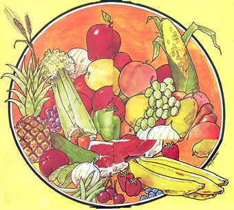

Sun-drying works best in areas such as the southwestern states and the central plains of the U.S. and Canada where dry, clear weather is normal at the height of the produce harvest. Indoor dehydration is the rule for cloudy or highly polluted localities. In regions like the Southeast, where strong sun is offset by moist air, evaporation can be speeded by the use of the solar dryer a vented, glass-covered box like a cold frame, which produces higher temperatures and hence lower relative humidity.
A surprising variety of foods can be sun-dried especially produce, which should be chosen for top quality, picked over, and washed well. Juicy fruits are usually halved or quartered, and vegetables-which are low in acid and spoil more readily-cut into small pieces for faster dehydration.
Many folks then dry their produce without more ado, and enjoy good success. Some experts on food preservation, though, hold that vegetables should first be blanched in scalding steam to stop the action of enzymes that cause deterioration in storage. Another pretreatment-exposure to the fumes of burning sulfur-is often advised for fruits such as apples, apricots, peaches, and pears, to preserve color and vitamins A and C (which are otherwise destroyed, although most nutrients are well retained).
Treated or not, the foods are spread without crowding on paper-lined trays or-preferably-cloth-covered wooden frames, protected with cheesecloth if insects are a problem, and left in the sun to dry with the aid of occasional turning. The trays should be moved under shelter and guarded from dampness at night. If wet weather sets in, the batch can be saved from spoilage by oven-drying.
Another common practice is to string pieces of food on strong thread which are then hung in the sun or indoors. Sheltered air-drying is recommended for herbs and in areas of low humidity, most edibles can be dehydrated in the shade with superior retention of color and flavor.
Some experts state that sun-dried foods should be pasteurized by heating them in an oven at 1750 F (10 minutes for vegetables cut small, 15 minutes for fruits). Others, however, simply check each batch for uniform dryness and pack the edibles in airtight containers. It's wise to inspect any such stored products now and then for spoilage.
Dried foods can be nibbled raw, or covered with boiling water and soaked or simmered until tender. Be sure to use the liquid!
Dry, pure air is needed for outdoor dehydration of fish or meat. Thin strips of beef or venison may be soaked in brine for a day or two, hung over a wooden frame in a sunny, airy spot, and cured until brittle. Fish are split, cleaned, and coated with pickling salt then stacked on racks and shade-dried for several days. Bring the pieces in at night and weight them down to press out the brine. Finally, the dried fish are scrubbed free of salt, and spread or hung outdoors until the flesh is very firm.
For more detailed information, including pretreatment instructions, see Putting Food By by Ruth Hertzberg, Beatrice Vaughan, and Janet Green (Stephen Greene Press, Brattleboro, Vt., 1973, $4.95) and Complete Book of Home Storage of Vegetables and Fruits by Evelyn V. Loveday (Garden Way Publishing, Charlotte, Vt., 1972, $3.00).
Beans (pod): string, green, snap, wax
Beans (shelled) and peas
Cereal and bread grains: barley, corn,
oats, rye, buckwheat, wheat, rice Herbaceous plants
Onions, leeks, kohlrabi Peppers
Pumpkin, squash
Apples
Apricots Berries Cherries
Currants, figs, grapes
Peaches, pears
Plums
1.) Wash and dry, cut or break off ends and pull strings, cut or break into one-inch pieces, spread on frames (or string on heavy thread), dry until tough to brittle.
Shell, grade if desired, spread on frames, stir daily until hard and brittle. 2.) Spread on frames, stir daily until completely dry. Allow corn to stand on stalks until fully mature, pick and husk, leave on cobs until grains are hard, strip from ears.
3.) If the plants have thick, juicy stems such as celery or rhubarb, slice thinly and spread on frames (or string) and dry into brittle chips. Hang leafy herbs in a shady, airy place, crumble when dry, remove large stems, and store leaves in airtight containers.
4.) Peel and slice into thin rings (no more than 1/8 inch thick), spread on frames (or string), dry until light-colored and brittle.
5.) Small peppers (tabasco, red) may be dried whole until dark and shrunken. Slice others into rings, spread on frames (or string), dry until crisp and brittle.
6.) Wash, remove stem, cut open, clean out seeds and pith, trim off peel. Cut in cubes or slices, spread on frame (or string), and dry until tough.
7.) Wash, peel, slice thin (no need to core), spread on frames (or string), dry until leathery. Wash, halve, remove pit, dry skin side down on frames until leathery. Do not turn. Wash, spread on frames until hard.
8.) Wash and pit, or halve if large and juicy. Dry on frames until leathery and sticky.
Pull from bunches (grapes), wash, dry on frames until leathery and slightly sticky.
9.) Wash, halve (or quarter if fruit is large), remove pits (peaches), dry skin side down on frames until tough and leathery. Do not turn.
10.) Prune plums are best for drying. Wash, and dry on frames until leathery and pliable.
|
 |
|
|